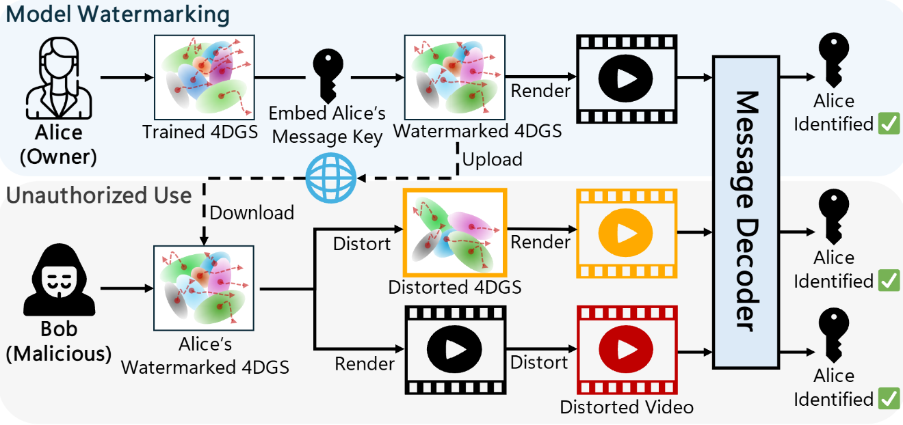
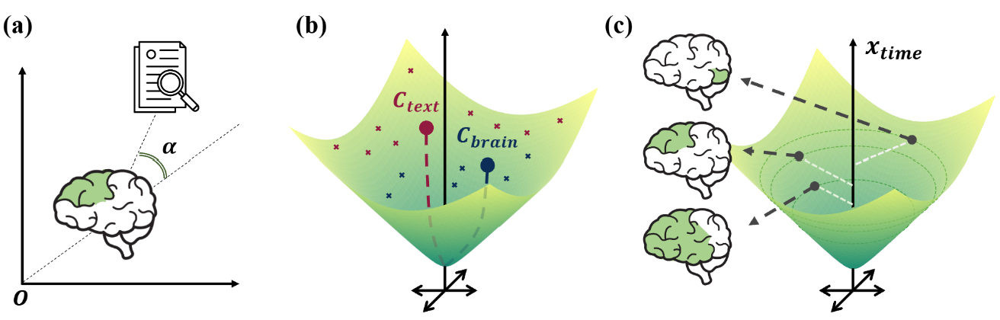

|
Jaejin Lee Hi, I am a second-year master student at MIP Lab, advised by Prof. Won Hwa Kim. My primary research interest includes 3D vision, privacy/copyright of model assets, and medical imaging. Feel free to contact me if you are interested in my research projects! Email / CV / Google Scholar / GitHub |

|
News |
|
Publications |
|
|
SurgMark: Structure-Aware Watermarking for 4D Gaussian Splatting in Surgical Scenes
Minjae Jeong*, Jaejin Lee*, Yechan Hwang, Won Hwa Kim Under review Paper |
|
|
Learning Robust Medical Image Segmentation under Mixed-Quality Annotations
Minjae Jeong*, Seungjoo Lee*, Jaejin Lee, Won Hwa Kim Under review Paper |
|  |
Mark4D: Temporally-Consistent Watermarking for 4D Gaussian Splatting
Jaejin Lee*, Minjae Jeong*, Yechan Hwang, Won Hwa Kim IEEE/CVF Conference on Computer Vision and Pattern Recognition (CVPR), 2026 Paper |
|  |
MNM: Multi-level Neuroimaging Meta-analysis with Hyperbolic Brain-Text Representations
Seunghun Baek, Jaejin Lee, Jaeyoon Sim, Minjae Jeong, Won Hwa Kim International Conference on Medical Image Computing and Computer Assisted Intervention (MICCAI), 2025 Paper |

|
HGM³: Hierarchical Generative Masked Motion Modeling with Hard Token Mining
Minjae Jeong*, Yechan Hwang*, Jaejin Lee, Sungyoon Jung, Won Hwa Kim International Conference on Learning Representations (ICLR), 2025 Paper |
Education |
|
Experience |
|
Teaching |
|
Teaching Assistant in POSTECH |
Personal Interests |
|
What I love to do in free time.. |
|
Website template adapted from Jon Barron. |